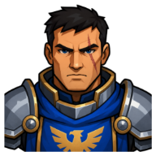
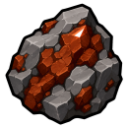
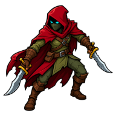

⚔️
Iron Resolve
Thornwood tests everyone who enters. Prove your mettle against its stalkers.
| Property | Value |
|---|---|
| Quest giver |  Captain Voss |
| Zone | 🌲 Thornwood |
| Quest points | 3 |
| Requirements | ⚔️ Combat level 30 ⛏️ Mining 20 🔨 Forging 25 |
Objectives
- Hand in

Iron Ore ×10 - Defeat 1 ×

Dark Stalker
Rewards
- 🪙 1,000 coins
- 400 ⚔️ Attack XP
- 400 🛡️ Defence XP